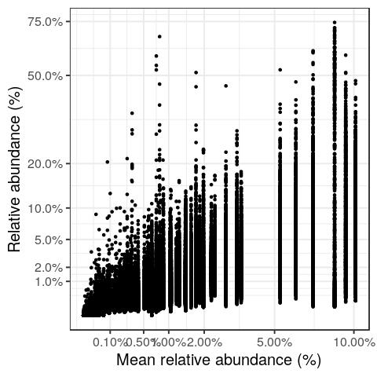
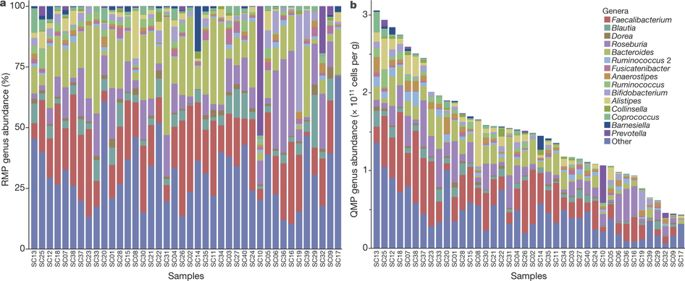
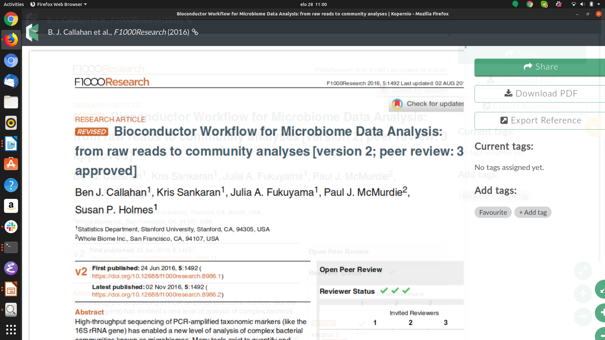
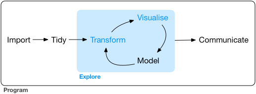
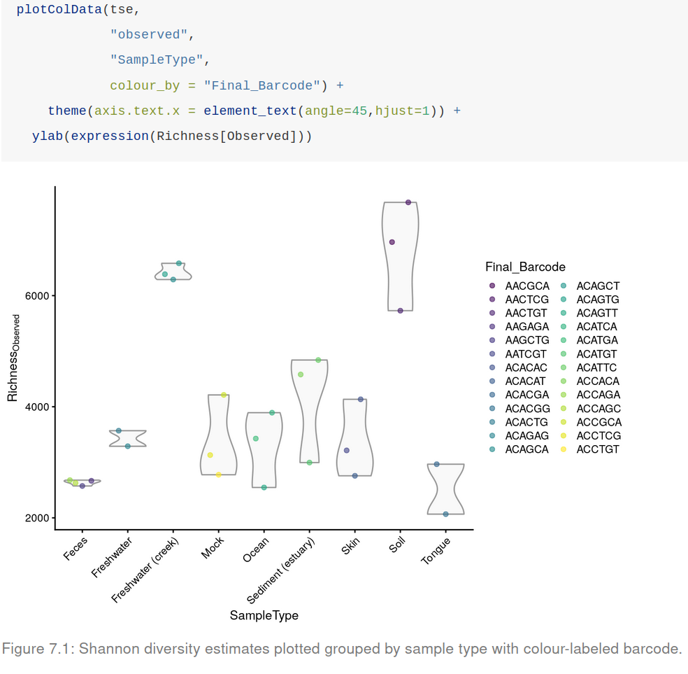
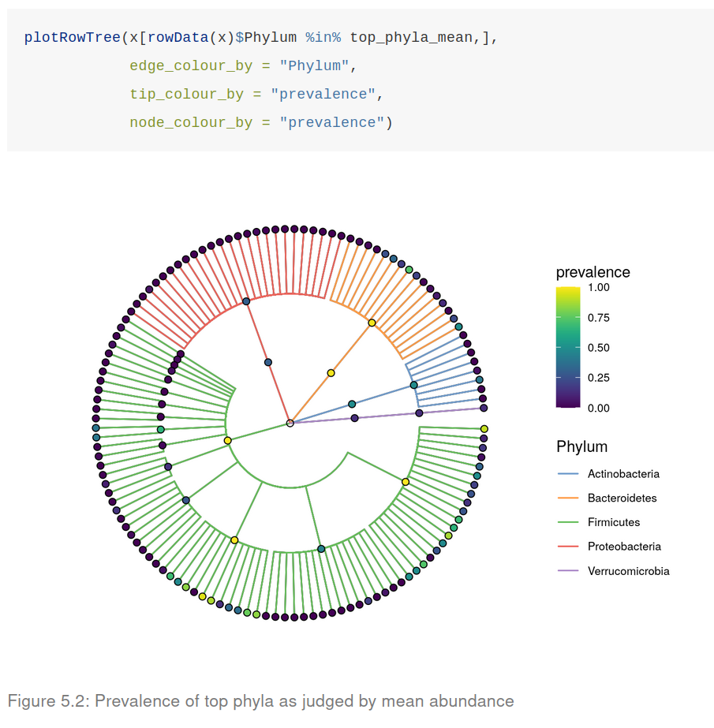
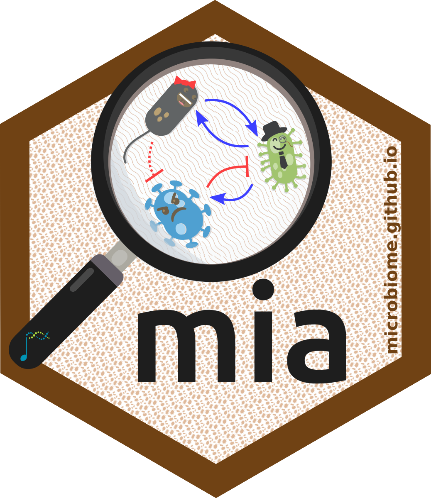

CSC course, Nov 28 – Dec 2, 2022
2026-10-05


Data import
Data analysis
Reporting


Data import
Data analysis
Reporting

Standard:
Frequent:

Data import
Data analysis
Reporting
Compositional (Aitchison) transformations:
Takes advantage of vegan transformations.
Phylogeny-aware distance metrics:
Unifrac method by Rob Knight. Initial R/Bioc design for phyloseq Paul J. McMurdie. Adapted for mia/TreeSummarizedExperiment by Felix G.M. Ernst.
special properties of microbiome data
data science workflows
alpha diversity
beta diversity
differential abundance
“I have begun to think that no one ought to publish biometric results, without lodging a well arranged and well bound manuscript copy of all his data, in some place where it should be accessible, under reasonable restrictions, to those who desire to verify his work.”
Francis Galton (1901), Biometrika 1:1, pp. 7-10.
Create a clear reproducible report of the example data, including the following aspects:
